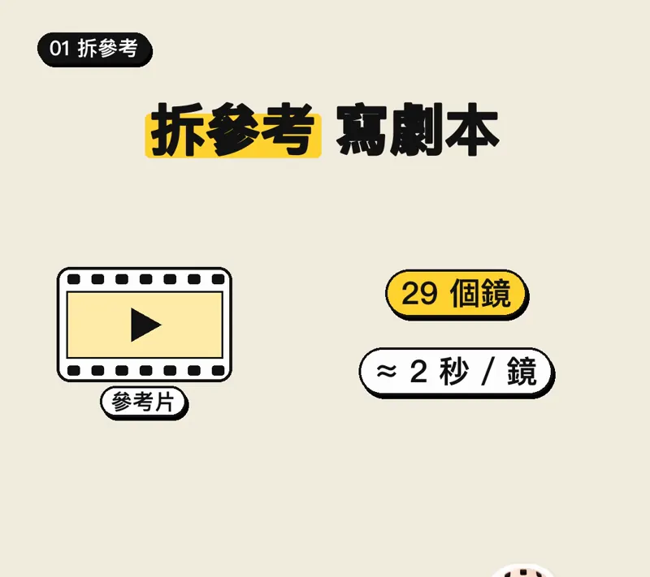
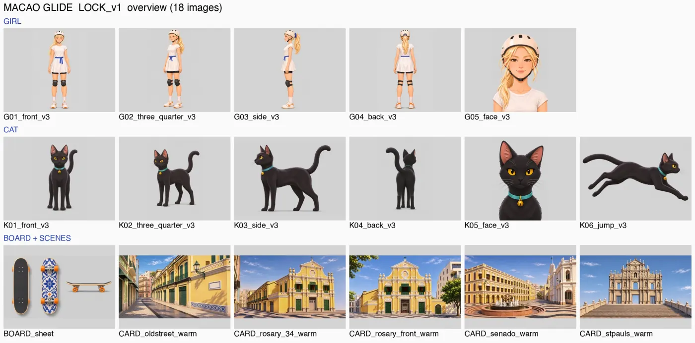
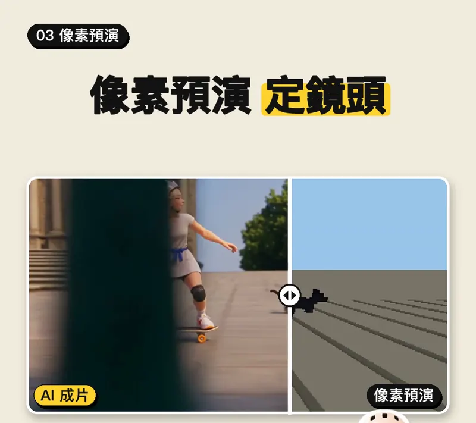
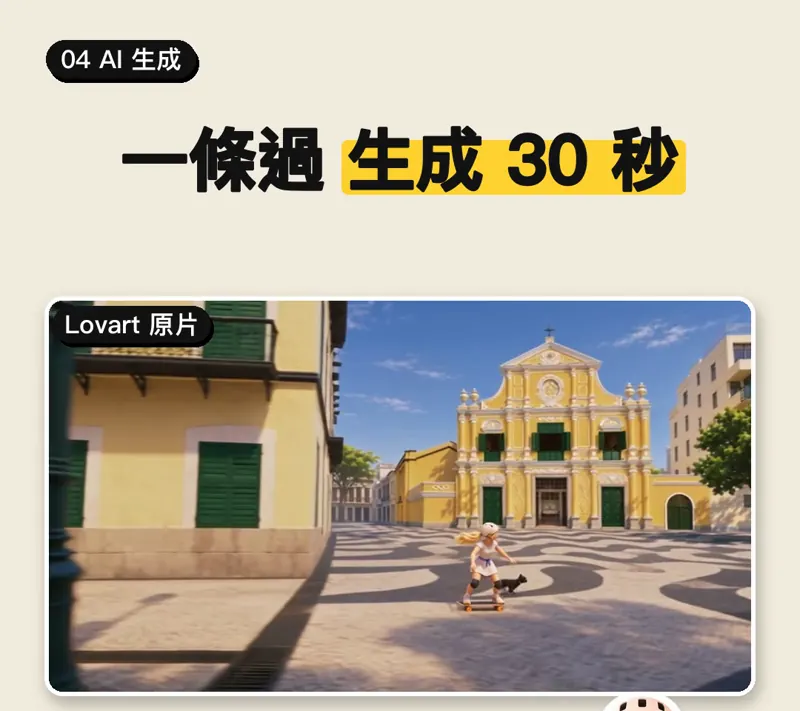
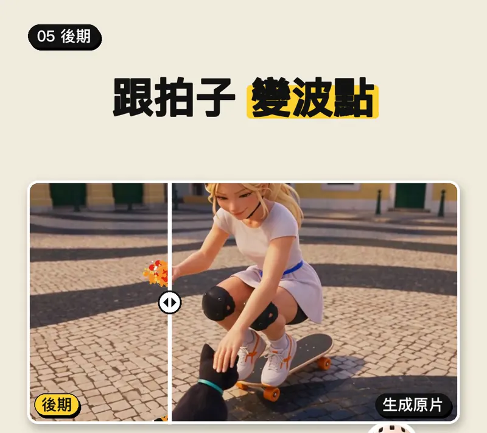

先睇成品：你做緊嘅係咩
《MACAO GLIDE》係一條 30 秒、16:9 嘅澳門滑板卡通：一個戴頭盔嘅女仔，同一隻黑貓，喺澳門街景同大三巴一帶滑板。整條片由一個人用 AI 完成。下面係最終封面。
一句講晒個思路：先將所有嘢「鎖死」，再生成。角色、場景、鏡頭、招式都喺 AI 出片之前決定好，AI 淨係負責將佢哋變成動畫。
拆參考片＋寫劇本先數清楚個節奏，再設計滑板招式

AI 影片最易死喺「冇節奏」：你淨係叫佢「做條滑板卡通」，出嚟嘅鏡頭長短亂晒，又唔知邊度要有招式。
- 揀一條你想學節奏嘅參考片，逐個鏡頭數：今次拆出 29 個鏡，鏡長中位數 1.8 秒、平均 2.07 秒，即係差唔多 2 秒轉一個鏡。
- 跟住呢個節奏寫劇本：30 秒大約要幾多個鏡，一早就知道。
- 滑板招式唔好臨場再諗，今次喺劇本入面一次過設計好 8 招滑板動作，每招對返邊個鏡。
- 只學節奏同結構，唔好照抄參考片嘅畫面。
你有一張表：總共幾個鏡、每鏡幾秒、邊個鏡做邊招。
鎖死角色同場景先出齊參考圖，之後每個鏡都用同一套

唔鎖死嘅話，每個鏡出嚟個女仔、隻貓、街景都唔同，成條片似拼湊出嚟。
- 角色：女主出 5 個角度（正面、斜側、側面、背面、面部特寫）；黑貓出 6 個角度（正面、斜側、側面、背面、面部、跳躍）。
- 滑板出一張板面＋側面圖；場景出幾張暖光場景卡（今次有舊街、玫瑰聖母堂兩個角度、議事亭前地、大三巴）。
- 生成之後逐張數清楚：貓仔要四隻腳一條尾，女仔手腳數量、衫同護膝都要對。數錯就重出，唔好帶住問題入下一步。
- 全部圖用同一個光線方向（暖光），之後影片先唔會一鏡日、一鏡夜。
18 張鎖定圖（女主 5＋黑貓 6＋滑板＋場景）全部過咗檢查先入下一步。
像素預演定鏡頭用簡單像素公仔先行一次，免得燒 AI 點數抽卡

直接叫 AI 生成，每次鏡頭、走位、招式都靠運氣，抽到啱先算，好貴亦好慢。
- 用像素公仔（簡單 3D 白模）將全片行一次，輸出一條預演片。
- 喺預演入面先定死三樣：鏡頭（遠近、角度、運動）、走位（女仔同貓幾時喺邊）、招式（第 1 步設計嗰 8 招幾時出現）。
- 預演唔靚都冇所謂，要睇嘅係節奏同構圖啱唔啱；有問題喺呢度改，成本最平。
你有一條同成片一樣長嘅預演片，睇完冇再想改嘅鏡頭。
預演片當參考，一條過生成 30 秒將預演片同鎖定圖一齊餵入 Lovart

逐個鏡頭分開生成再駁，接位好易唔連貫；今次嘅做法係一次生成成條 30 秒。
- 將第 3 步嘅預演片當參考影片，連同第 2 步嘅角色圖、貓圖、場景卡，一齊放入 Lovart。
- 一次過生成 30 秒，唔好拆好多段。今次生成一次用咗 600 點（Lovart 一次任務嘅紀錄）。
- 出片後對返第 1 步嘅鏡頭表同第 3 步嘅預演：招式、走位、貓有冇走樣。
有一條 30 秒原片，大致跟住預演嘅鏡頭同走位。
後期跟拍子：波點特效、地點牌、貓叫聲將生成原片剪成有節奏、有資訊嘅成片

原片只係「識郁」。後期先令佢有節奏、有記憶點。
- 跟住音樂拍子加特效：今次將女主變成彩色波點。
- 加地點牌，睇片嘅人一眼知係澳門邊個景點。
- 加貓叫聲：今次貓叫聲係合成出嚟，同畫面對準先自然。
成片嘅特效、字牌、聲音都落喺拍子上。
唔滿意？直接講封面太平淡，就重新打過黃昏斜陽光
- 用一句話講出問題，例如「封面太平淡」，唔使寫成技術術語。
- 講明想要嘅光線方向：今次叫佢「重新打過黃昏斜陽光」。
- 叫佢只改光線，人物、構圖、標題保持不變，改完逐樣對返。
5 步清單
- 拆參考片＋寫劇本：數清楚鏡數同每鏡時間，設計好招式。
- 鎖死角色同場景：角色多角度圖、暖光場景卡，數清楚手腳尾巴。
- 像素預演：鏡頭、走位、招式先定死。
- 預演片當參考，一條過生成 30 秒。
- 後期跟拍子：特效、地點牌、貓叫聲；唔滿意就直接講，改光線唔改其他。
常見問題
要識寫程式嗎？
唔使。成個流程係生成圖、整預演片、放入 Lovart 生成，再做後期剪輯。
點解要先做像素預演？
因為鏡頭、走位、招式喺預演入面改最平；之後將預演片當參考影片放入 Lovart，一條過生成 30 秒，唔使靠抽卡。
成條片用咗幾多點數？
今次最後生成一次用咗 600 點（Lovart 任務紀錄）。點數同價錢按你嘅方案而定，以 Lovart 畫面為準。
角色變樣點算？
返去第 2 步重出有問題嘅角度，逐張數清楚（例如貓仔要四隻腳一條尾）再重新生成，唔好帶住問題入下一步。
封面唔滿意可以點？
直接用一句講出問題：今次封面太平淡，叫 AI 重新打過黃昏斜陽光，由第一版變到有層次、有光影嘅版本。